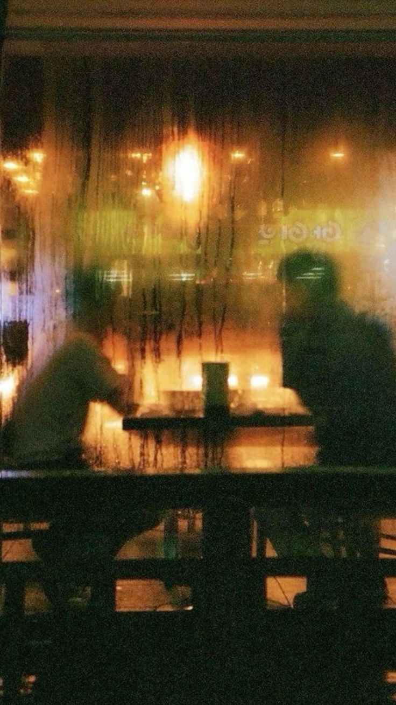

Podcast


After Hours
Soul, jazz et discussions nocturnes. Mises à jour bi-mensuelles.
Dernier épisode
#
Titre
Date
1
La musique comme refuge
Une discussion spontanée sur la façon dont la musique nous accompagne, nos disques refuges et le pouvoir réconfortant d'une mélodie.
À propos
Loin du bruit numérique, After Hours est un espace radiophonique pensé comme un club de jazz confidentiel...
Production
Axel
Digger & Réal
Yaël
Curateur & Voix
© 2026 After Hours.